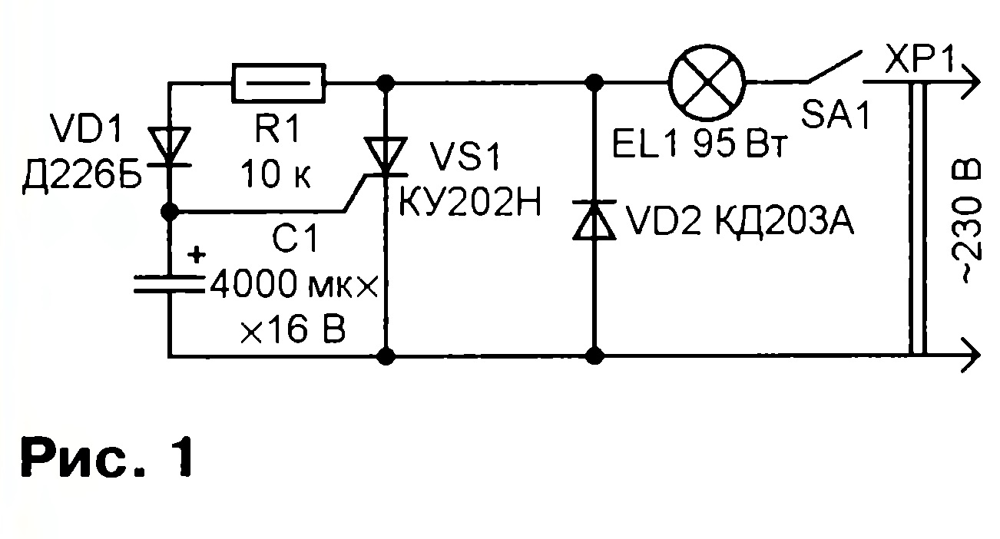
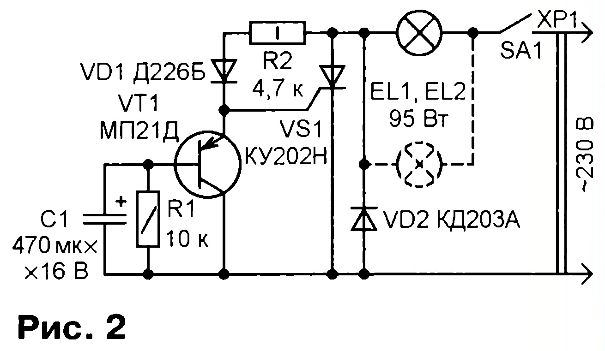

Для предотвращения выхода ламп накаливания из строя в момент включения предложены различные устройства плавного и ступенчатого включения. Схема одного из них изображена на рис.1 (предложена В. Банниковым в статье «Автомат защиты ламп от перегорания на реле и тринисторе», опубликованной в «Радио», 1996, № 12, с. 35,36). После включения устройства в сеть через лампу накаливания EL1 течет пульсирующий в результате выпрямления диодом VD2 ток, и она светит вполнакала. При положительной полуволне сетевого напряжения через резистор R1 и диод VD1 начинает заряжаться конденсатор C1, включенный между управляющим электродом и катодом тринистора VS1. По мере зарядки напряжение на конденсаторе увеличивается и наступает момент, когда его становится достаточно для открытия тринистора. В это время устройство ведет себя нестабильно: свет мерцает либо лампа светит не в полную мощность, что говорит о неполном открытии тринистора. Когда же напряжение на управляющем электроде повышается настолько, что тринистор остаётся открытым в течении всего полупериода сетевого напряжения, мигание лампы прекращается и она светит ровно.
Второй недостаток устройства проявляется после выключения электропитания и последующего включения через непродолжительное время. При этом уже нет никакой задержки и плавного включения, лампа загорается сразу полным накалом, причина – в большой ёмкости конденсатора C1, на разрядку которого требуется довольно много времени.
В предлагаемом доработанном устройстве (рис.2) недостатки предыдущего устранены. Сопротивление резистора R1 уменьшено в два раза (до 4,7кОм), что обеспечило полное надёжное открытие тринистора. Дополнительно введен транзистор VT1, включенный как эмиттерный повторитель, а ёмкость конденсатора C1 уменьшена до 470 мкФ. Конденсатор включён между базой и коллектором транзистора, поэтому его ток зарядки равен току базы транзистора и как минимум на порядок меньше тока зарядки через резистор R2. Это и позволило уменьшить ёмкость конденсатора с 4000 до 470 мкФ при сохранении времени его зарядки.
После замыкания контактов выключателя SA1 лампа EL1, как и до переделки, начинает светить вполнакала. Конденсатор C1 в момент замыкания контрактов разряжен, напряжение на управляющем электроде тринистора впервые положительные полупериоды задается открытым транзистором VT1 и равно 0,2…0,25 В. Весь ток в эти полупериоды практически течет через лампу EL1, резистор R2, диод VD1 и транзистор VT1. Тринистор закрыт. По мере зарядки конденсатора напряжение эмиттер-коллектор возрастает – начинается перераспределение протекающего тока. Появляется и растёт ток через управляющий электрод тринистора, а эмиттерный ток транзистора уменьшается. С некоторого момента рост тока приводит к открыванию тринистора и далее – к плавному увеличению яркости свечения лампы вплоть до полного.
Время от включения устройства в сеть до открывания тринистора – примерно такое же, что и до переделки, а вот время между выключением и последующим включением лампы с сохранением ступенчатого характера существенно сократилось, поскольку конденсатор C1 имеет значительно меньшую ёмкость и разряжается через шунтирующий его резистор R1, увеличивающий скорость разрядки.
Монтаж устройства – навесной, детали - малогабаритные и припаяны к выводам тринистора VS1 и диода VD2, установленных на небольшой текстолитовой плате, теплоотводов они не имеют. Устройство надёжно работает с двумя лампами мощностью 95Вт каждая.
Автор доработанной части устройства: Александр Кузнецов